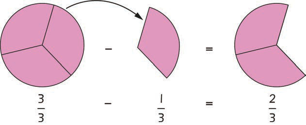

3.
Remove one shaded part of the circle in step 2. Write its fraction in numerals.
4.
Draw the circle again to show the remaining shaded part after removing one part in step 3.
5.
Write the fraction of the remained shaded part in step 4.
The previous steps can be illustrated as follows:

To subtract fractions with the same denominator subtract the numerators as you subtract ordinary numbers. The denominator does not change because the parts make up one thing.
Thus,
Therefore,
Example 2
Use drawings to find the answer to the following question:
Steps
1.
Draw and shade five out of six parts of a circle.
2.
Write the fraction of the shaded parts in numerals.